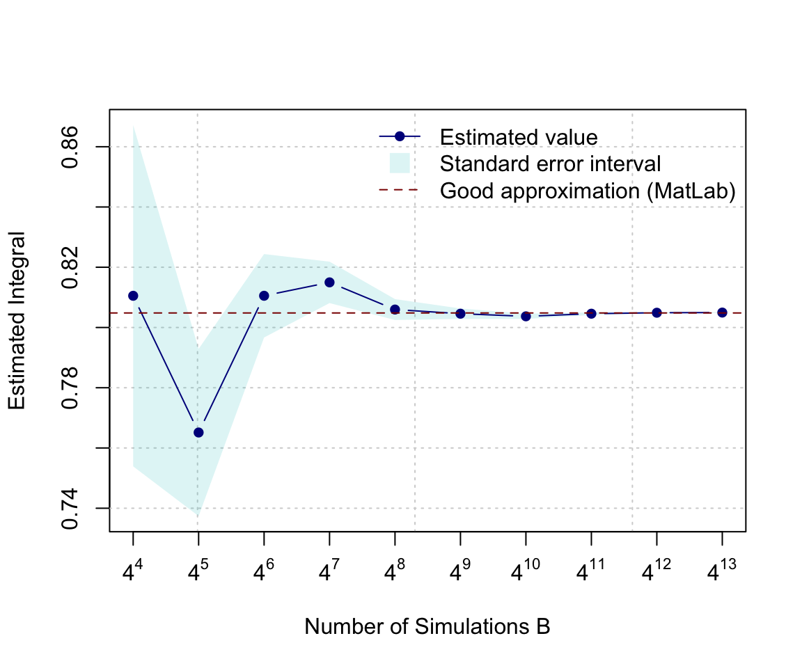

Chapter 5 Control Structures
5.1 Introduction
When you’re building a larger or more complex program than the examples we considered previously, we need to use various control structures to control the “flow” of our actions. Essentially, a control structure is a “block” of code that analyzes variables and chooses a direction in which to go based on given parameters. These pieces of code represent the most basic decision-making processes in computing.
There exist essentially two kinds of control structures.
- The first one allows to determine whether a given condition is satisfied and select an appropriate response. A simple analogy to our day-to-day life would be “if it’s cold outside, then take a jacket” (we will come back to this example in the next section).
- The second kind of control structure allows to repeat of a block of code multiple times. For example, such an approach can be used to convert a color image to a gray-scale by applying the same operation(s) (i.e. same code) to each pixel of the image. In this chapter, we will first discuss the two kinds of control structures previously mentioned and then present various examples to help build our intuition.
5.2 Selection control statements
Suppose that we are interested in creating a simple code to check if it can possibly get very cold and, if this is the case, lead us to decide whether we should take a jacket today. To write such a code we essentially need three things:
- Find out how cold it can possibly get today at our location, i.e. the minimum temperature. Such information is now easily accessible through various websites and we can for example use the R package
ROpenWeatherMapto access this information. Note that you will need to create an account and request an API key before being able to use it (see package documentation for more details). Then, the minimum temperature of the day at our location can be retrieved using the code below:
library(ROpenWeatherMap)
data = get_current_weather(mykey, city="geneva")
min_temp = data$main$temp_min - 273.15 # kelvin to celsius- Construct a logical (or Boolean) variable created from the variable
min_tempto assess whether or not a jacket is needed. For example, we can say that if the temperature can possibly drop below 5 celsius today, then we should bring a jacket with us. This can be done using the code below and in Section 5.2.1 we will discuss how to construct logical variables in more details.
## [1] FALSE- Finally, we need to select operators based on the logical variables constructed in the previous step to bring everything together. For example, we could use the
if/elsestatement presented below. This simple code will print “You should probably bring a jacket” if the logical variablejacketisTRUEand print “A jacket is probably not necessary”, otherwise.
if (jacket){
print("You should probably bring a jacket")
}else{
print("A jacket is probably not necessary")
}## [1] "A jacket is probably not necessary"5.2.1 Logical Operators
Logical operators are very commonly used in programming to create (or return) logical (boolean) variables. In general, logical operations take place by comparing one or more variables following specific rules. The table below summarizes the commonly used logical operators:
| Command | Description | Example | Result |
|---|---|---|---|
x > y |
x greater than y | 4 > 3 |
TRUE |
x >= y |
x greater or equals to y | 1 >= 1 |
TRUE |
x < y |
x less than y | c(12 < 20, 1 < 1) |
TRUE, FALSE |
x <= y |
x less than or equals to y | 12 <= 1 |
FALSE |
x == y |
x equal to y | c(2 == 2, 1 == 2) |
TRUE, FALSE |
x != y |
x not equal to y | c(2 != 2, F != T) |
FALSE, TRUE |
!x |
Not x | c(!(2 > 1), !FALSE) |
FALSE, TRUE |
x ||y |
x or y (not vectorized) | (1 > 1) || (2 < 3) |
TRUE |
x |y |
x or y (vectorized) | c(1 > 1, F) || c(T, 2 < 3) |
TRUE |
x && y |
x and y (not vectorized) | TRUE && TRUE |
TRUE |
x & y |
x and y (vectorized) | c(TRUE, T) & c(TRUE, F) |
TRUE, FALSE |
| xor(x,y) | test if only one is TRUE | xor(TRUE, TRUE) |
FALSE |
all(x) |
test if all are TRUE | all(c(T, F, F)) |
FALSE |
any(x) |
test if one or more is TRUE | any(c(T, F, F)) |
TRUE |
||and | (or && and &). Indeed, when using x && y or x || y it implicitly assumes that x and yare of length 1 and when these are applied to vectors only the first elements of each vector will be considered. For example, c(TRUE,FALSE) || c(FALSE, FALSE) is equivalent to TRUE || FALSE and will only return TRUE. On the other hand, & and | can be applied to vectors and c(TRUE,FALSE) || c(FALSE, FALSE) is equivalent to c(TRUE || FALSE, FALSE || FALSE) and will return TRUE FALSE. It is also worth mentioning that TRUE | c(FALSE, FALSE) is equivalent to c(TRUE || FALSE, TRUE || FALSE) (i.e. the TRUE is used twice) and will return TRUE TRUE. These differences are a common source of bugs.
& or | to create/return logical variables we have to be aware of something called short-circuit evaluation which can create bugs that may be difficult to find. Indeed, suppose that we interested in using an expression such as x & y and that if the variable x is FALSE then y will not be evaluated. The idea behind this evaluation is that, regardless of the value of y, the expression x & y should be TRUE. However, this implicitly assumes that y does not contain any mistakes and if this were indeed to be the case, this could create bugs that would be hard to find. For example, consider the expression y = x && 2 == NULL, then if x is FALSE y will be FALSE while if x is TRUE y will be NA, which obviously is likely to be problematic. Similarly, when considering an expression such as x | y, the variable y will only be evaluated if x is FALSE.
5.2.2 Selection Operators
Selection operators govern the flow of code. We can observe if/else statements everywhere, no matter what language.
5.2.2.1 if Statements
The most basic selection operator is called an if statement. Essentially, an if statement tells R to do a certain task for a certain case. In plain English it would correspond to something like, “If this is true, do that” or as in our motivating example “If it can possibly get too cold, bring a jacket”. In R, you would say:
or
In general, we can represent an if statement using the following diagram:

The <conditon> denotes a logical variable that is used determine if the code inside of { } will be evaluated. For example, if <condition> is FALSE then our program will run Code block A and then Code block C. On the other hand, if <condition> is TRUE our program will run Code block A, Code block B and finally Code block C.
Below we present two examples where two if statements are used. In the first example, we use an if statement to compute the absolute value of a variable called x:
## [1] 4Now we change x to a negative value:
## [1] 4In the second example, we use an if statement to assess if x is an even number and, if this is the case, we print a simple message.
## [1] "4 is an even number"5.2.2.2 if/else Statements
Often when we write a program we want to tell R what to do when our condition is TRUE and also what to do when it is FALSE. Of course, we could do something like:
However, the above syntax is somewhat clumsy and one generally would prefer to use an if/else statement. In plain English it would correspond to something like, “If this is true, then do plan A otherwise do plan B”. In R we would write:
Similarly to an if statement, we can represent an if/else statement using the diagram below:

Therefore, when <condition> is TRUE our program will run Code block A, Code block B and then Code block D while when <condition> is FALSE it will run Code block A, Code block B and finally Code block D. Using this new tool we can revisit our previous example on even numbers to include a custom message in the case of an odd number. This can be done as follows:
x <- 2
if (x %% 2 == 0){
print(paste(x, "is an even number"))
}else{
print(paste(x, "is an odd number"))
}## [1] "2 is an even number"x <- 3
if (x %% 2 == 0){
print(paste(x, "is an even number"))
}else{
print(paste(x, "is an odd number"))
}## [1] "3 is an odd number"5.2.2.3 if/elseif/else Statements
We can also control the flow of statements with multiple if/else statements, depending on the number of cases we consider. Typically, the more cases we have, the more else if statements. An example visualization is provided below.

5.2.2.4 switch Statement
Earlier we mentioned that if/elseif/else statements allow us to choose between TRUE and FALSE when there are two options. With the above idea, when there are more than two options we can simply use nested if/else statements. What about when we have roughly 20 options to choose from? In this case, if we stick to using nested if/else statements, the programming logic will be very difficult to understand. The switch statement option in R programming can help us handle this type of problems more effectively.
Before we put switch statements into the case study, let’s first start to understand the basic switch statement syntax in R.
switch (Expression,
"Option 1" = Execute this statement when the expression result matches Option 1,
"Option 2" = Execute this statement when the expression result matches Option 2,
"Option 3" = Execute this statement when the expression result matches Option 3,
....
....
"Option N" = Execute this statement when the expression result matches Option N,
Default Statements
)- The
expressionvalue is the condition which R will evaluate. This should be either integer or character. - When the
expressionvalue matches more than one option, the first matching statement will be returned. - Besides the conditional statement, R also allows us to add the
default statement, which will be returned when none of the listed options are matched.
With the above syntax in mind, let’s now check a simple case study with R switch statements.
number1 <- 20
number2 <- 5
operator = readline(prompt="Please enter any ARITHMETIC OPERATOR: ")
switch(operator,
"+" = print(paste("Addition of two numbers is: ", number1 + number2)),
"-" = print(paste("Subtraction of two numbers is: ", number1 - number2)),
"*" = print(paste("Multiplication of two numbers is: ", number1 * number2)),
"/" = print(paste("Division of two numbers is: ", number1 / number2))
)

5.2.3 Iterative Control Statements
Iterative control statements are an extremly useful R method for repeating a task multiple times. For example, pretend we are trying to build a program that solves a simple maze like the one below.

It would be pretty easy to simply draw out the possible solutions with the naked eye. However, if you were actually inside the maze, you would need to narrow your perspective and think of a strategy, like marking paths you have already visited. Suppose that we have a strategy in mind to solve this problem. For example, we could consider the following approach at any given point in time:
- if there is space in front of you, go forward
- else, if there is space on your right, turn right
- else, if there is space on your left, turn left
- else, [all three sides (forward, left, right) are closed] turn around
This strategy could easily be programmed using the methods discussed in Section 5.2 but to actually program it you would need to repeat this strategy until you escaped the maze. Your strategy could for example be written as:
repeat (until "you are free"){
if ("space in front of you"){
go forward
}else if ("space on your right"){
turn right
}else if ("space on your left"){
turn left
}else{
turn around
}
}Try to develop an algorithm to exit the maze presented above. Could you escape? Though it might take some time (and probably would not correspond to the fastest strategy) one can show that this method can solve any maze (assuming of course that a solution exists). In this section we discuss the elements necessary to actually program the “repeat (until "you are free")” part of our algorithm.
5.2.3.1 for Loops
Let’s consider the following situation:
This seems feasible when we only need to print out the numbers from 1 to 6. What if we want to print out the numbers from 1 to 100? It is such a clumsy and tedious approach if we keep repeating print() line by line to do so.
For loops in R help us solve this type of problems much more effectively in only a couple lines of codes. It allows us to repeat the same part of code, or say a sequence of same instructions, under certain conditions without explicitly writing out the code everytime. For example, to do exactly the same as the above example with for loops, all we need is:
## [1] 1
## [1] 2
## [1] 3
## [1] 4
## [1] 5
## [1] 6To interpret the above for loops in plain English, we can read it as “When the number is in the sequence {1,2,3,4,5,6}, we will print this number until we exhaust all numbers in the sequence”. As we can see obviously, this approach simplifies our code so much more as we only need to write the code chunk (print() in this case) once, not six times, not to mention when we want to print out all the numbers from 1 to 100 compared to repeating print() line by line for 100 times.
The basic syntax of for loops in R is as follows:
for (some specified sequence to loop over){
execute this statement when we still haven not reached the last item in the sequence
}Next also helps when you want to skip for some cases in which you don’t want the statement to be executed. To see how next works together with for loops in R, let’s consider the following more mathematical example when you want to print out all the odd numbers between 1 to 10.
## [1] 1
## [1] 3
## [1] 5
## [1] 7
## [1] 9From the results, we notice that R automatically skip to run print(i) when !i %%2 is TRUE. To interpret the above in plain English, we can read it as “if the number i cannot be divided by 2, we skip the below and consider the NEXT number in the sequence”. In this case, we can still use for loops when we have some exceptional cases.

Up till now, we can see that for loops can simplify our work a lot when we need to execute a sequence of same instructions for multiple times. However, there are still disadvantages to use for loops in R. We may hardly notice now with only a few simple iterations to run. But indeed, R can be very slow when running iteration, especially when we need to do a lot of big iterations with big data. Sometimes we may prefer to avoid using for loops in R by using other approaches since R supports vectorization, which will allow for much faster calculations. For example, solutions that make use of loops are less efficient than vectorized solutions that make use of apply functions, such as lapply and sapply. It’s often better to use the latter.
Apply methods are often used to make operations on some structured data. For example, let’s simulate a matrix of some random samples.
## [,1] [,2] [,3]
## [1,] 1.2641127 -1.455629201 1.18725660
## [2,] 0.7605783 -0.003717245 0.62239538
## [3,] 0.8986743 0.201608421 -0.63467405
## [4,] -0.2599687 -1.717030566 0.13811572
## [5,] -1.2732897 -0.553815979 -1.68757532
## [6,] 1.4665207 1.797689516 -1.69342039
## [7,] -0.1886869 -0.487240060 2.00632838
## [8,] -0.8078425 -0.067124376 0.28370037
## [9,] 0.2201780 0.476543256 -1.63774310
## [10,] -0.2420270 1.102555363 0.85130893
## [11,] 0.1616306 1.413921582 1.57550258
## [12,] -1.5155518 -1.683922909 0.16483272
## [13,] -0.5130531 -0.213472626 0.15858790
## [14,] -1.7673859 -0.173933741 -1.65122474
## [15,] -1.2921990 0.791080267 -0.21468870
## [16,] -0.5180424 0.505944277 -0.55773403
## [17,] 0.8689581 0.814993972 -0.22162617
## [18,] -1.6382529 -0.546740017 -0.72351140
## [19,] -1.4691652 0.292504331 -0.09889761
## [20,] -1.3349362 0.153025747 1.28550326To get the mean of each column, we can calculate each column mean separately or use a for loop.
## [1] -0.1230012## [1] -0.3589874## [1] 0.032362## [1] -0.04237818## [1] -0.3589874
## [1] 0.032362
## [1] -0.04237818However, using apply, we can do this in a very simple manner.
## [1] -0.35898743 0.03236200 -0.04237818We will see how these approaches can help accelerate our work later.
5.2.3.2 while Statements
As an alternative of for loops, while statement in R is another approach that can help us repeat the code chunk only when specific conditions are satisfied. For example, we can use while statement to do exactly the same as above to print out all numbers from 1 to 6 as followings:
## [1] 1
## [1] 2
## [1] 3
## [1] 4
## [1] 5
## [1] 6The above code can be interprented in plain English as: “Let’s start with number 1. When the number i is still smaller than or equal to 6, we print it out. Then we consider the next integer of it and stop when we finish all the numbers smaller than or equal to 6.”
As we can see, while statement is used to iterate until a specific condition is met. To make use of while statement in R, we introduce the basic syntax of it as following:
Here we evaluate the condition and if it is TRUE, then we execute the statement inside the code chunk. Once we finish running the statement, we evaluate the condition again and exit the loops when the condition is evaluated as FALSE.

5.3 Example: The Bootstrap
The (non-parametric) bootstrap was introduced by Efron (1979) as a numerical method to provide a simple estimator of the distribution of an estimator. This method became rapidly very popular since it is completely automatic, requires no theoretical derivation and is (almost) always available no matter how complicated our estimator of interest is. Moreover, most statistical methods are based on various asymptotic approximations (often through the central limit theorem) that can however deliver poor results in finite sample settings. Bootstrap techniques generally enjoy better finite sample performance while paying a price in terms of computation burden. A formal discussion of the properties of (non-parametric) bootstrap techniques is far beyond the scope of this textbook but it’s actually quite simple to understand its algorithm. To motivate this discussion, suppose that we ask 10 students how much time they work at home for their STAT 297 class. Say we obtain the following results (in hours):
We can compute the mean time spent
Moreover, we compute a simple confidence interval of the average number of hours spent by a student enrolled in STAT 297. Since we have no reason to believe that the number of hours spent working at home for this class is not Gaussian, we can construct an asymtotic confidence interval using:
\[ \bar{x} \pm z_{1-\alpha/2} \frac{\hat{\sigma}}{\sqrt{n}}, \]
where \(\bar{x}\) is the sample mean, \(\alpha\) is the significance level which delivers \(z_{1-\alpha/2}\) quantile of standard Gaussian distribution and \(\hat{\sigma}\) is the sample standard deviation (we assume that estimating the standard deviation has no impact on the distribution of \(\bar{x}\)). In R, this interval can therefore be computed as follows:
alpha <- 0.05
n <- length(student_work)
sd_hour <- sd(student_work)
z <- qnorm(1 - alpha/2)
mean_hour + c(-1, 1)*z*sd_hour/sqrt(n)## [1] -0.1256494 1.9438313Based on this confidence interval your instructor is very disappointed since the confidence interval includes 0, indicating that it is possible that the students study on average zero hours. But does this interval makes sense? The lower bound of the interval is negative implying that students can also have negative hours of study. This of course makes no sense indicating that with this sample size the asymptotic Gaussian approximation makes little sense.
To solve this issue, the (non-parametric) bootstrap is a convenient and appropriate tool to compute more adequate finite sample confidence intervals. Letting \(\mathbf{X} = \left[X_1 \;\; \ldots \;\; X_n\right]\) denote the sample (in our case student_work), the way the bootstrap works is as follows:
- Step 1: Let \(i = 1\).
- Step 2: Construct a new sample, say \(\mathbf{X}^*\), by sampling with replacement \(n\) observations from \(\mathbf{X}\).
- Step 3: Compute the average of \(\mathbf{X}^*\) which we will denote as \(\bar{X}_i\). Let \(i = i + 1\) and if \(i < B\) go to Step 2 otherwise go to Step 4.
- Step 4: Compute the empirical quantiles of \(\bar{X}_i\).
Here is a simple function to implement this approach:
# Number of boostrap replications
B <- 500
# Compute the length of vector
n <- length(student_work)
# Confidence level
alpha <- 0.05
# Initialisation of
boot_mean <- rep(NA, B)
# Step 1
for (i in 1:B){
# Step 2
student_work_star <- student_work[sample(1:n, replace = TRUE)]
# Step 3
boot_mean[i] <- mean(student_work_star)
}
# Step 4
quantile(boot_mean, c(alpha/2, 1 - alpha/2))## 2.5% 97.5%
## 0.1818182 2.0000000Based on this result your instructor is relieved since they know that, at a level of confidence of 95%, you are spending at least more than 10 minutes on your course work.
while control?
A researcher developed a new drug to help patients recover after a surgery. To investigate if her drug is working as expected, she starts by creating a simple test experiment on mice. In this experiment, the researcher records the survival times of 14 mice after a test surgery. Out of the 14 mice, 8 of them are given the new drug while the remaining ones are used as a control group (where no treatement is given). Her results (in days) are the following:
- Treatement group: 38, 76, 121, 86, 52, 69, 41 and 171;
- Control group: 18, 12, 52, 82, 102 and 25.
5.4 Example: Random Walk
The term random walk was first introduced by Karl Pearson in the early nineteen-hundreds. There exist a large range of random walk processes. For example, one of the simplest forms of a random walk process can be explained as follows: suppose that you are walking on campus and your next step can either be to your left, your right, forward or backward (each with equal probability). The code illustrates how to program such a random process:
# Control seed
set.seed(1992)
# Number of steps
steps <- 10^5
# Direction probability (i.e. all direction are equally likely)
probs <- c(0.25, 0.5, 0.75)
# Initial matrix
step_direction <- matrix(0, steps+1, 2)
# Start random walk
for (i in seq(2, steps+1)){
# Draw a random number from U(0,1)
rn = runif(1)
# Go right if rn \in [0,prob[1])
if (rn < probs[1]) {step_direction[i,1] = 1}
# Go left if rn \in [probs[1], probs[2])
if (rn >= probs[1] && rn < probs[2]) {step_direction[i,1] = -1}
# Go forward if rn \in [probs[2], probs[3])
if (rn >= probs[2] && rn < probs[3]) {step_direction[i,2] = 1}
# Go backward if rn \in [probs[3],1]
if (rn >= probs[3]) {step_direction[i,2] = -1}
}
# Cumulative steps
position = data.frame(x = cumsum(step_direction[, 1]),
y = cumsum(step_direction[, 2]))
# Let's make a nice graph...
# Graph parameters
color = "blue4"
xlab = "X-position"
ylab = "Y-position"
pt_pch = 16
pt.cex = 2
main = paste("Simulated 2D RW with", steps, "steps", sep = " ")
hues = seq(15, 375, length = 3)
pt_col = hcl(h = hues, l = 65, c = 100)[1:2]
par(mar = c(5.1, 5.1, 1, 2.1))
# Main plot
plot(NA, xlim = range(position[,1]),
ylim = range(range(position[,2])),
xlab = xlab, ylab = ylab, xaxt = 'n',
yaxt = 'n', bty = "n", ann = FALSE)
win_dim = par("usr")
par(new = TRUE)
plot(NA, xlim = range(position[,1]), ylim = c(win_dim[3], win_dim[4] + 0.09*(win_dim[4] - win_dim[3])),
xlab = xlab, ylab = ylab, xaxt = 'n', yaxt = 'n', bty = "n")
win_dim = par("usr")
# Add grid
grid(NULL, NULL, lty = 1, col = "grey95")
# Add title
x_vec = c(win_dim[1], win_dim[2], win_dim[2], win_dim[1])
y_vec = c(win_dim[4], win_dim[4],
win_dim[4] - 0.09*(win_dim[4] - win_dim[3]),
win_dim[4] - 0.09*(win_dim[4] - win_dim[3]))
polygon(x_vec, y_vec, col = "grey95", border = NA)
text(x = mean(c(win_dim[1], win_dim[2])), y = (win_dim[4] - 0.09/2*(win_dim[4] - win_dim[3])), main)
# Add axes and box
lines(x_vec[1:2], rep((win_dim[4] - 0.09*(win_dim[4] - win_dim[3])),2), col = 1)
box()
axis(1, padj = 0.3)
y_axis = axis(2, labels = FALSE, tick = FALSE)
y_axis = y_axis[y_axis < (win_dim[4] - 0.09*(win_dim[4] - win_dim[3]))]
axis(2, padj = -0.2, at = y_axis)
# Add trajectory
lines(position, type = "l", col = color, pch = 16)
# Start and end points
points(c(0,position[steps+1,1]), c(0,position[steps+1,2]), cex = pt.cex, col = pt_col, pch = pt_pch)
# Legend
leg_pos = c(min(position[,1]), max(position[,2]))
legend(leg_pos[1], leg_pos[2], c("Start","End"),
col = pt_col, pch = pt_pch, pt.cex = pt.cex, bty = "n")
Such processes inspired Karl Pearson’s famous quote that
“the most likely place to find a drunken walker is somewhere near his starting point.”
Empirical evidence of this phenomenon is not too hard to find on a Friday night.
5.5 Example: Monte-Carlo Integration
5.5.1 Introduction
Monte Carlo integration is a powerful technique for numerical integration. It is particularly useful to evaluate integrals of “high-dimension”. A detailed (and formal) discussion of this method is clearly beyond the scope of this class and we shall restrict our attention to the most basic form(s) of Monte Carlo integration and briefly discuss the rational behind this method.
Originally, such Monte Carlo methods were known under various names among which statistical sampling was probably the most commonly used. In fact, the name Monte Carlo was popularized by several researchers in Physics, including Stanislaw Ulam, Enrico Fermi and John von Neumann. The name is believed to be a reference to a famous casino in Monaco where Stanislaw Ulam’s uncle would borrow money to gamble. Enrico Fermi was one of the first to use this technique which he employed to study the properties of a newly-discovered neutron in the 1930s. Later for example, these methods played a central role in many of the simulations required for the Manhattan project.
With this in mind, let us give an idea of this approach by supposing we are interested in computing the following integral:
\[I = \int_a^b f(x) dx.\]
Of course, this integral can be approximated by a Riemann sum:
\[I \approx \Delta x \sum_{i = 1}^n f(a + (i-1) \Delta x),\]
where \(\Delta x = \frac{b - a}{n}\;\) and the idea behind this approximation is that as the number of partitions \(n\) increases, the Riemann sum will become closer and closer to \(I\). Also (under some technical conditions), we have that
\[I = \lim_{n \to \infty} \Delta x \sum_{i = 1}^n f(a + (i-1) \Delta x).\]
In fact, the rational of a Monte Carlo integral is quite close to the Riemann sum since, in its most basic form, we approximate \(I\) by averaging samples of the function \(f(x)\) at uniform random points within the interval \([a, b]\). Therefore, the Monte Carlo estimator of \(I\) is given by
\[\begin{equation} \hat{I} = \frac{b - a}{B} \sum_{i = 1}^B f(X_i), \tag{5.1} \end{equation}\]
where \(X_i = a + U_i (b - a)\) and \(U_i \sim \mathcal{U}(0,1)\). In fact, (5.1) is quite intuitive since \(\frac{1}{B} \sum_{i = 1}^B f(X_i)\) represents an estimation of the average value of \(f(x)\) in the interval \([a, b]\) and thus \(\hat{I}\) is simply the average value times the length of the interval, i.e. \((b-a)\). If you would like to learn more about the properties of Monte-Carlo integrals, click on the button below:
A more formal argument on the validity of this approach can be found in analyzing the statistical properties of the estimator \(\hat{I}\). In order to do so, we start by considering its expected value \[ \mathbb{E}\left[ \hat{I} \right] = \frac{b - a}{B} \sum_{i = 1}^B \mathbb{E}\left[ f(X_i) \right] = \frac{b - a}{B} \sum_{i = 1}^B \int f(x) g(x) dx, \]
where \(g(x)\) denotes the pdf of \(X_i\). Since \(X_i \sim \mathcal{U}(a, b)\) it follows that
\[ g(x) = \left\{ \begin{array}{ll} \frac{1}{b - a} & \mbox{if } x \in [a, b] \\ 0 & \mbox{if } x \not\in [a, b] \end{array} \right. \]
Therefore, we have
\[ \mathbb{E}\left[ \hat{I} \right] = \frac{b - a}{B} \sum_{i = 1}^B \int_a^b \frac{f(x)}{b-a} dx = \int_a^b f(x) dx = I, \]
Since \(X_i\) are iid, the same can be said about \(f(X_i)\) and therefore by the Strong Law of Large Numbers we have that \(\hat{I}\) converges almost surely to \(I\), which means that
\[ \mathbb{P}\left(\lim_{B \to \infty} \hat{I} = I \right) = 1. \]
This result implies that as the number of simulations \(B\) goes to infinity we can guarantee that the solution will be exact.
Unfortunately, this result doesn’t give us any information on how quickly this estimate converges to a “sufficiently accurate” solution for the problem at hand. This can be done by studying the variance of \(\hat{I}\) and its rate of convergence. Indeed, we have
\[ \begin{aligned} \operatorname{var} \left( \hat{I} \right) &= \left(\frac{b - a}{B}\right)^2 \sum_{i = 1}^B \left\{\mathbb{E}\left[f^2(X_i)\right] - \mathbb{E}^2\left[f(X_i)\right]\right\}\\ &= \frac{1}{B^2} \sum_{i = 1}^B \left\{(b-a) \int_a^b f^2(x) dx - \left(\int_a^b f(x) dx \right)^2 \right\}\\ &= \frac{(b-a) I_2 - I^2}{B} \end{aligned} \]
where \(I_2 = \int_a^b f^2(x) dx\). A simple estimator of this quantity is given by
\[ \hat{I}_2 = \frac{b - a}{B} \sum_{i = 1}^B f^2(X_i), \]
and therefore using \(\hat{I}\) we obtain:
\[ \widehat{\operatorname{var}} \left(\hat{I} \right) = \frac{(b-a) \hat{I}_2 - \hat{I}^2}{B} = \frac{b - a}{B^2} \sum_{i = 1}^B\left[ (b - a )f^2(X_i) - f(X_i)\right] \]
Thus, it is easy to see that the rate of convergence of \(\widehat{\operatorname{var}} \left(\hat{I} \right)\) is \(B^{-1}\) and we may write \({\operatorname{var}} \left(\hat{I} \right) = \mathcal{O}(B)\). This implies that if we wish to reduce the error (or standard deviation) by half, we need to quadruple \(B\). Such a phenomon is very common in many fields of research such as Statistics where this is often called the curse of dimensionality.5.5.2 Implementation
The function mc_int(), which is available in the introDS package, implements the above method. This functions has four inputs:
x_range: A vector containing the integration domain, i.e. \(a\) and \(b\),fun: A string containing the function you wish to integrate where \(x\) is used to indicate the variable of integration,B: A numeric value to denote the number of Monte-Carlo replications,seed: A numeric value to control the seed of the random number generator.
For example, if you want to estimate
\[ \int_1^3 \frac{\exp\left(\sin(x)\right)}{x} dx, \]
using \(10^4\) Monte-Carlo replications, you can use the following command:
## $I
## [1] 2.558104
##
## $var
## [1] 1.401222e-05
##
## $fun
## [1] "exp(sin(x))/x"
##
## $x_range
## [1] 1 3
##
## $B
## [1] 1e+05
##
## attr(,"class")
## [1] "MCI"At this point, it is probably a good idea to try to programm this yourself and to compare your results (and code!) with the function mc_int(). This should be rather easy to implement but one thing that may be a little delicate is how to pass the function you wish to integrate as an input. A possible way of doing this is to use a string so that, for example, if we have to integrate the function \(\sin(x)\) you could simply write fun = sin(x) when calling your function. This implies that we should be able to “transform” a string into a function that we can evaluate, which is something that we can achieve by combining the functions eval and parse. An example is provided below:
## [1] 0 1 4 9If you’re having trouble understanding what these functions are doing have a look at their help files by writing ?eval and ?parse.
5.5.3 Application to the Normal Distribution
Suppose that \(X \sim \mathcal{N}(4, 1.25^2)\) and that we are interested in computing the following probability \(\mathbb{P}\left(1 < X < 4.5 \right)\). The probability density of the normal distribution for a random variable with mean \(\mu\) and variance \(\sigma^2\) is given by:
\[ f(x) = \frac{1}{\sqrt{2 \pi \sigma^2}} \exp \left(- \frac{\left(x - \mu\right)^2}{2 \sigma^2}\right). \]
Therefore, the probability we are interested in can be written as the following integral
\[ \mathbb{P}\left(1 < X < 4.5 \right) = \int_1^{4.5} \frac{1}{\sqrt{3.125 \pi}} \exp \left(- \frac{\left(x - 4\right)^2}{3.125}\right). \]
Analytically, this is not an easy problem and of course there are many ways to solve it. However, we could try to use a Monte-Carlo integral to solve it. For example:
my_fun = "1/sqrt(3.125*pi)*exp(-((x - 4)^2)/3.125)"
(prob = mc_int(x_range = c(1, 4.5), fun = my_fun, B = 10^7))## $I
## [1] 0.6471691
##
## $var
## [1] 1.449985e-08
##
## $fun
## [1] "1/sqrt(3.125*pi)*exp(-((x - 4)^2)/3.125)"
##
## $x_range
## [1] 1.0 4.5
##
## $B
## [1] 1e+07
##
## attr(,"class")
## [1] "MCI"Based on this result, we can write \(\mathbb{P}\left(1 < X < 4.5 \right) \approx 64.72 \%\) with a standard error of about 0.01%. We can compare our results with what we would obtain with the function pnorm which provides a nearly exact result:
## [1] 0.6472242This shows that our estimation is within one standard error of a near perfect result.
5.5.4 Application to Nonelementary Integrals
In layman’s terms, a nonelementary integral of a given (elementary) function is an integral that cannot be expressed as an elementary function. The French mathematicien Joseph Liouville was the first to prove the existance of such a nonelementary integral. A well-known example of such integrals are the Fresnel integrals that have been used for a very wide range of applications going from the computation of electromagnetic field intensity to roller roster design. These integrals are defined as:
\[S(y) = \int_0^t \sin\left(x^2\right) dx \;\;\;\;\;\; \text{and} \;\;\;\;\;\; C(y) = \int_0^y \cos \left( x^2 \right) dx.\]
In this example, we will only consider \(S(y)\). In general it is believed that the most convenient way of evaluating these functions up to an arbitrary level of precision is to use a power series representation that converges for all \(y\):
\[ S(y) = \sum_{i = 1}^\infty \, \left(-1\right)^n \, \frac{y^{4i + 1}}{\left(2i + 1\right) \, !\left(4i + 3\right)}. \]
In this example, we will study the estimation of \(S(\pi)\) as well as the precision of this estimation.
B = 4^(4:13)
results = matrix(NA, length(B), 2)
for (i in 1:length(B)){
mc_res = mc_int(c(0, 2), "sin(x^2)", B = B[i], seed = i+12)
results[i, ] = c(mc_res$I, sqrt(mc_res$var))
}
trans_blue = hcl(h = seq(15, 375, length = 3), l = 65, c = 100, alpha = 0.15)[2]
plot(NA, xlim = range(B), ylim = range(cbind(results[, 1] + results[,2],
results[, 1] -results[,2])), log = "x", ylab = "Estimated Integral",
xlab = "Number of Simulations B", xaxt = 'n')
grid()
axis(1, at = B, labels = parse(text = paste("4^", 4:13, sep = "")))
polygon(c(B, rev(B)), c(results[, 1] + results[, 2],
rev(results[, 1] - results[, 2])), border = NA, col = trans_blue)
lines(B, results[, 1], type = "b", col = "blue4", pch = 16)
abline(h = 0.8048208, col = "red4", lty = 2)
legend("topright", c("Estimated value", "Standard error interval", "Good approximation (MatLab)"), bty = "n",
pch = c(16, 15, NA), lwd = c(1, NA, 1), lty = c(1, NA, 2),
pt.cex = c(1, 2, NA), col = c("blue4", trans_blue, "red4"))
A Basic Probability and Statistics with R
Efron, B. 1979. “Bootstrap Methods: Another Look at the Jackknife.” The Annals of Statistics 7 (1): 1–26.